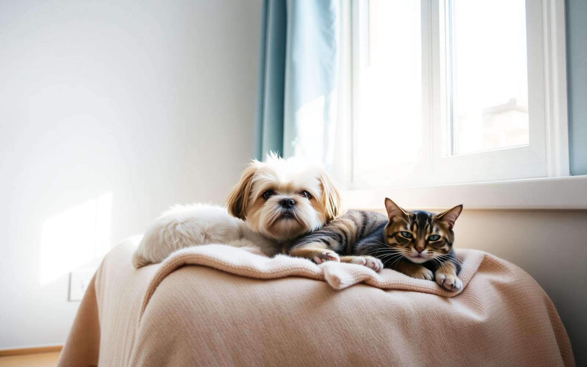

O Centro Humanizado de Adoção Responsável de Animais aproxima instituições de acolhimento e pessoas que desejam adotar, com um processo simples, seguro e organizado do primeiro contato até o novo lar.

Fichas de avaliação padronizadas para cada adotante.
Abrigos e lares temporários verificados e próximos de você.
Visitas agendadas e status de solicitação sempre visível e cuidado contínuo pós-adoção
Este sistema faz parte da iniciativa C.H.I.A.R.A e busca facilitar a relação entre instituições responsáveis e pessoas interessadas em realizar uma adoção responsável, reduzindo a burocracia e dando transparência a cada etapa.
Espaço reservado para a história, a missão e a equipe da C.H.I.A.R.A.
Espaço reservado para detalhes técnicos, parcerias e indicadores do projeto.
Quatro passos simples entre o primeiro cadastro e a chegada do animal em casa.
Cadastre-se e responda algumas perguntas sobre sua rotina e moradia.
Veja instituições próximas e filtre por espécie, porte, idade e local.
Demonstre interesse e marque uma visita ao animal ou à instituição.
A instituição avalia a ficha, aprova o pedido e acompanha o novo lar.

2 anos · Pequeno · Fêmea
🖈Abrigo Patas Felizes

3 anos · Pequeno · Fêmea
🖈Instituto Amigo animal

5 anos · Grande · Macho
🖈Abrigo Patas Felizes

4 meses · Pequeno · Macho
🖈Lar Temporário Encontro
Centro Humanizado de Adoção
Responsável de Animais.
contato@chiara.org.br
☎︎ (0 0) 0000-0000
🖈 Resende, RJ
@chiara.adocao
/chiara.adocao
Sobre a empresa (em breve)
Sobre o sistema (em breve)
Política de adoção (em breve)
© 2026 C.H.I.A.R.A · Protótipo demonstrativo